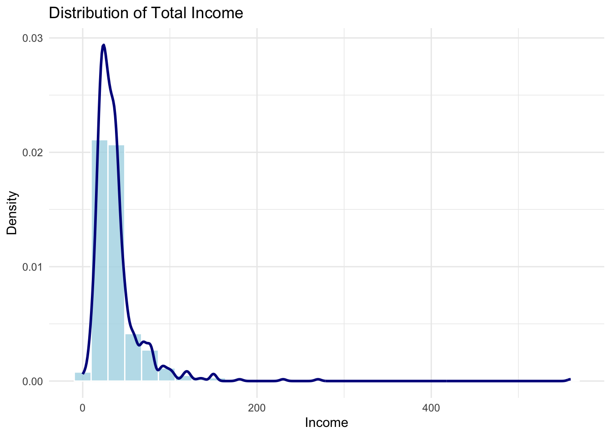
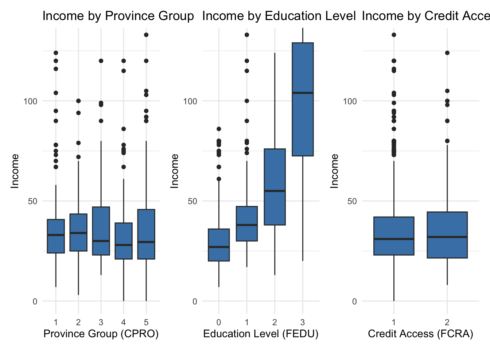
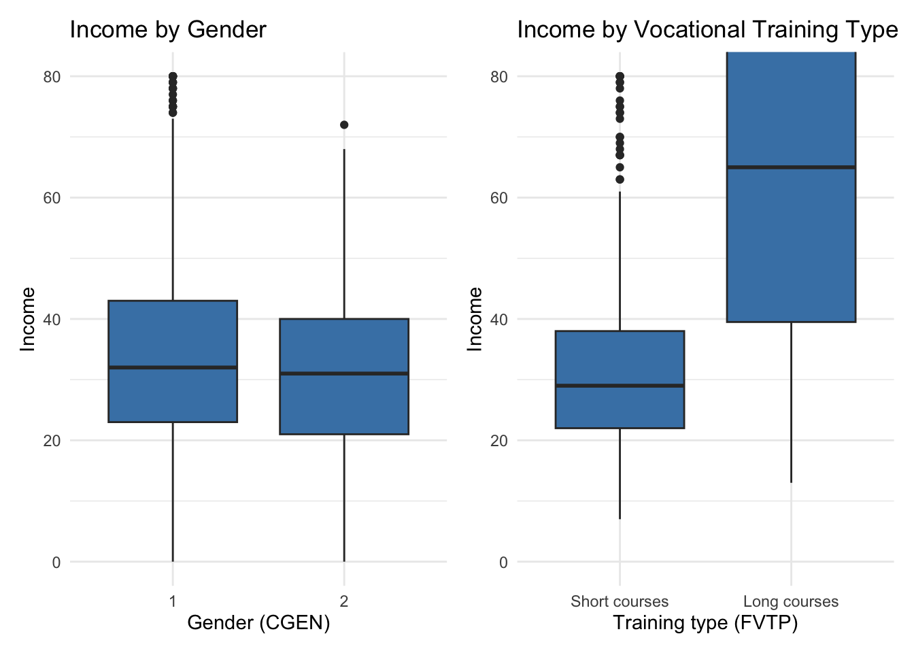
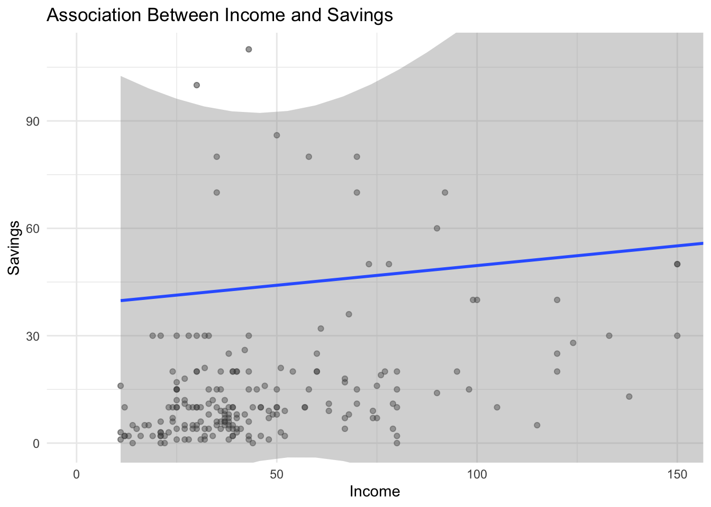
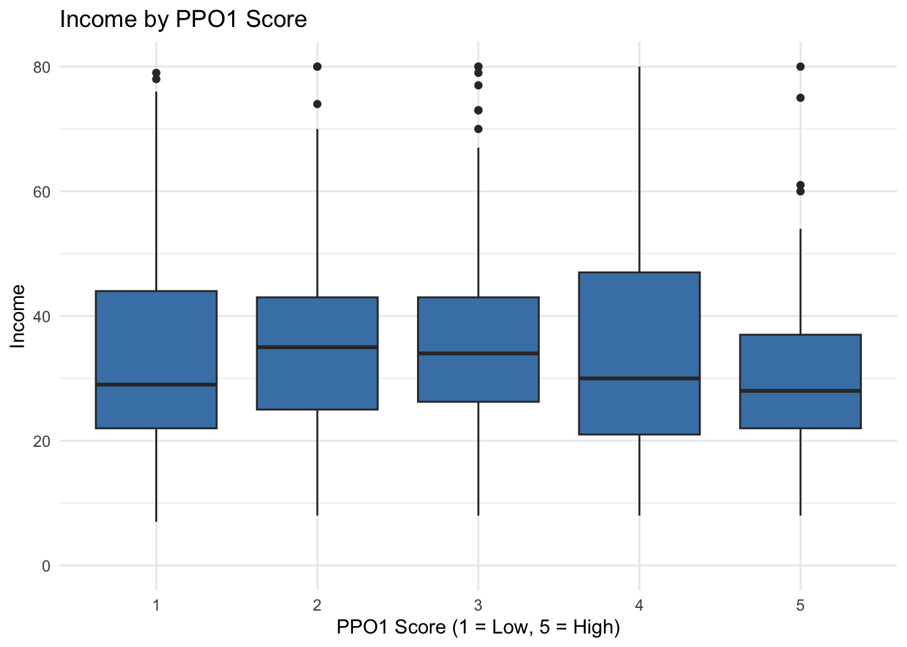
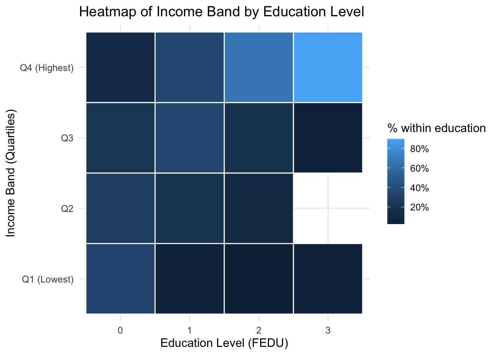

pacman::p_load(
tidyverse,
readxl,
janitor,
ggthemes,
patchwork,
ggridges,
scales
)Take-Home Exercise 1:Survey Analysis of Informal Labourers’ Income
Overview
This report analyses the income of informal rural labourers in the northern mountainous regions of Vietnam.
Getting Started
Install and load the required R packages for data manipulation and visualisation.
Loading Data
The dataset was imported from an Excel file containing survey responses from informal rural labourers in the northern mountainous regions of Vietnam.
df_raw <- read_xlsx("chapthe/data/Upload for elsiver.xlsx")
df_raw <- clean_names(df_raw)
glimpse(df_raw)Rows: 725
Columns: 30
$ cpro <dbl> 1, 1, 1, 1, 1, 1, 1, 1, 1, 1, 1, 1, 1, 1, 1, 1, 1, 1, 1, 1, 1, 1,…
$ cgen <chr> "1", "1", "2", "1", "2", "2", "1", "1", "1", "1", "1", "2", "2", …
$ crac <dbl> 2, 2, 2, 2, 2, 2, 2, 2, 2, 2, 2, 1, 1, 2, 2, 2, 1, 1, 1, 1, 1, 1,…
$ cjob <dbl> 1, 1, 3, 1, 1, NA, 3, 1, 3, 1, 1, 1, 2, 1, NA, 2, 1, 1, 1, 1, 1, …
$ cqui <dbl> 3, 5, 3, 3, 3, 4, 1, 3, 3, 3, 3, 3, 2, 3, 5, 1, 2, 2, 2, 2, 2, 2,…
$ tein <dbl> 37, 25, 33, 35, 36, 21, 35, 36, 38, 30, 58, 24, 32, 11, 22, 95, 4…
$ tain <dbl> 25, 22, 25, 30, 28, 17, 25, 28, 26, 22, 40, 24, 23, 11, 20, 30, 3…
$ tsii <dbl> 7, 0, 0, 5, 0, 0, 0, 0, 12, 2, 0, 0, 0, 0, 0, 50, 17, 10, 12, 15,…
$ toin <dbl> 5, 3, 8, 0, 8, 4, 10, 8, 0, 6, 18, 0, 9, 0, 2, 15, 0, 0, 0, 0, 16…
$ fedu <dbl> 1, 0, 1, 1, 0, 0, 3, 0, 2, 0, 0, 0, 0, 0, 0, 2, 1, 2, 2, 2, 2, 2,…
$ fvtp <dbl> 1, 1, 1, 1, 1, 1, 2, 1, 2, 1, 1, 1, 1, 1, 1, 2, 1, 2, 2, 2, 2, 2,…
$ fcra <dbl> 1, 2, 1, 1, 1, 1, 1, 1, 1, 1, 1, 1, 1, 1, 1, 1, 1, 1, 1, 1, 1, 1,…
$ ftap <dbl> 1, 1, 2, NA, 2, 2, 2, 2, 2, 2, 2, NA, NA, 2, NA, 2, NA, 2, NA, NA…
$ lho1 <dbl> NA, 1, NA, 1, NA, NA, NA, NA, NA, NA, NA, NA, NA, NA, 1, NA, NA, …
$ lho2 <dbl> 1, NA, NA, NA, 1, 1, NA, 1, 1, 1, 1, 1, NA, 1, NA, NA, NA, NA, NA…
$ lho3 <dbl> NA, NA, NA, NA, NA, NA, 1, NA, NA, NA, NA, NA, 1, NA, NA, 1, 1, 1…
$ lho4 <dbl> NA, NA, 1, NA, NA, NA, NA, NA, NA, NA, NA, NA, NA, NA, NA, NA, NA…
$ lcre <dbl> NA, 15, NA, NA, NA, NA, NA, NA, NA, NA, NA, NA, NA, NA, NA, NA, N…
$ lsav <dbl> 5, NA, 30, NA, NA, 2, 70, NA, 25, 10, 15, NA, NA, 16, NA, 20, NA,…
$ lwda <dbl> 240, 350, 260, 300, 360, 360, 260, 260, 300, 300, 270, NA, NA, 20…
$ ppo1 <dbl> 5, 2, 5, NA, 5, 2, 5, 5, 4, 5, 4, NA, NA, NA, NA, NA, NA, NA, NA,…
$ ppo2 <dbl> 2, 5, 5, NA, 5, 4, 2, 2, 3, 1, 1, NA, NA, NA, NA, NA, NA, NA, NA,…
$ ppo3 <dbl> 3, 3, 1, NA, 1, 3, 3, 3, 3, 3, 3, NA, NA, 1, NA, 1, NA, 1, NA, 1,…
$ ppo4 <dbl> 1, 1, 1, NA, 1, 1, 2, 2, 2, 2, 2, NA, NA, 3, NA, NA, NA, NA, NA, …
$ ppo5 <dbl> 3, 1, 1, NA, 1, 1, 3, 3, 3, 3, 3, NA, NA, 1, NA, NA, NA, NA, NA, …
$ aro1 <dbl> 3, 1, 1, NA, 1, 1, 2, 2, 2, 2, 2, NA, NA, NA, NA, NA, NA, NA, NA,…
$ aro2 <dbl> 1, 1, 1, NA, 1, 1, 1, 1, 1, 2, 1, NA, NA, 2, NA, NA, NA, NA, NA, …
$ aro3 <dbl> 1, 1, 1, NA, 1, 1, 3, 3, 2, 3, 3, NA, NA, 1, NA, 1, NA, NA, NA, 1…
$ aro4 <chr> "3", "3", NA, NA, "2", "2", "3", "3", "3", "3", "3", NA, NA, "3",…
$ aro5 <dbl> 1, 1, 1, NA, 1, 1, 3, 3, 3, 3, 3, NA, NA, 1, NA, NA, NA, NA, NA, …Data Preparation
To prepare the dataset for analysis and visualisation, several cleaning and recoding steps were performed.
Categorical variables (e.g., province group, gender, education level, training participation, and credit access) were converted into factor variables to support clearer grouped comparisons in plots.
Continuous financial indicators (e.g., income, savings, loans, and related monetary variables) were converted into numeric format to ensure accurate computation and visualisation.
Invalid or implausible entries were recoded as missing values (NA) to prevent distortion of summary statistics. Income was defined using tein, which represents total earnings.
df <- df_raw
# Convert categorical variables to factors
df$cpro <- factor(df$cpro)
df$cgen <- factor(df$cgen)
df$crac <- factor(df$crac)
df$cjob <- factor(df$cjob)
df$cqui <- factor(df$cqui)
df$fedu <- factor(df$fedu)
df$fvtp <- factor(df$fvtp)
df$fcra <- factor(df$fcra)
df$ftap <- factor(df$ftap)
# Convert continuous / financial variables to numeric
df$tein <- as.numeric(df$tein)
df$tain <- as.numeric(df$tain)
df$tsii <- as.numeric(df$tsii)
df$toin <- as.numeric(df$toin)
df$lcre <- as.numeric(df$lcre)
df$lsav <- as.numeric(df$lsav)
df$lwda <- as.numeric(df$lwda)
# Define income variable (total earnings)
df$income <- df$tein
summary(df) cpro cgen crac cjob cqui tein
1:150 1:592 1:336 1 :515 1 : 30 Min. : 0.00
2:144 2:133 2:389 2 : 62 2 :102 1st Qu.: 23.00
3:141 3 : 99 3 :307 Median : 31.50
4:143 NA's: 49 4 :118 Mean : 38.00
5:147 5 :164 3rd Qu.: 42.25
NA's: 4 Max. :560.00
NA's :1
tain tsii toin fedu fvtp
Min. : 0.00 Min. : 0.000 Min. : -6.00 0 :474 1 :610
1st Qu.: 17.00 1st Qu.: 0.000 1st Qu.: 0.00 1 :136 2 : 92
Median : 23.00 Median : 0.000 Median : 3.00 2 : 73 NA's: 23
Mean : 23.81 Mean : 5.566 Mean : 8.65 3 : 19
3rd Qu.: 30.00 3rd Qu.: 6.500 3rd Qu.: 10.00 NA's: 23
Max. :340.00 Max. :100.000 Max. :180.00
NA's :1 NA's :6
fcra ftap lho1 lho2 lho3 lho4
1 :636 1 :296 Min. :1 Min. :1 Min. :1 Min. :1
2 : 87 2 :327 1st Qu.:1 1st Qu.:1 1st Qu.:1 1st Qu.:1
NA's: 2 NA's:102 Median :1 Median :1 Median :1 Median :1
Mean :1 Mean :1 Mean :1 Mean :1
3rd Qu.:1 3rd Qu.:1 3rd Qu.:1 3rd Qu.:1
Max. :1 Max. :1 Max. :1 Max. :1
NA's :512 NA's :402 NA's :616 NA's :653
lcre lsav lwda ppo1
Min. : 0.00 Min. : 0.00 Min. : 0.0 Min. :0.000
1st Qu.: 7.00 1st Qu.: 5.00 1st Qu.:180.0 1st Qu.:1.000
Median : 10.00 Median : 10.00 Median :200.0 Median :2.000
Mean : 27.96 Mean : 44.17 Mean :219.8 Mean :2.548
3rd Qu.: 20.00 3rd Qu.: 20.00 3rd Qu.:300.0 3rd Qu.:4.000
Max. :600.00 Max. :5000.00 Max. :500.0 Max. :5.000
NA's :636 NA's :520 NA's :160 NA's :209
ppo2 ppo3 ppo4 ppo5 aro1
Min. :0.000 Min. :1.000 Min. :1.000 Min. :1.000 Min. :1.00
1st Qu.:1.000 1st Qu.:2.000 1st Qu.:1.000 1st Qu.:1.000 1st Qu.:1.00
Median :2.000 Median :2.000 Median :1.000 Median :2.000 Median :1.00
Mean :2.236 Mean :2.449 Mean :1.321 Mean :1.842 Mean :1.43
3rd Qu.:3.000 3rd Qu.:3.000 3rd Qu.:1.000 3rd Qu.:3.000 3rd Qu.:2.00
Max. :5.000 Max. :5.000 Max. :3.000 Max. :3.000 Max. :3.00
NA's :230 NA's :88 NA's :99 NA's :106 NA's :102
aro2 aro3 aro4 aro5
Min. : 1.00 Min. :1.000 Length:725 Min. :1.000
1st Qu.: 1.00 1st Qu.:1.000 Class :character 1st Qu.:1.000
Median : 1.00 Median :1.000 Mode :character Median :1.000
Mean : 1.38 Mean :1.124 Mean :1.712
3rd Qu.: 1.00 3rd Qu.:1.000 3rd Qu.:2.000
Max. :11.00 Max. :3.000 Max. :3.000
NA's :102 NA's :89 NA's :108
income
Min. : 0.00
1st Qu.: 23.00
Median : 31.50
Mean : 38.00
3rd Qu.: 42.25
Max. :560.00
NA's :1 Visualisation 1: Income Distribution
NoteVisualisation 1: Income Distribution

| Count | Mean | Median | SD | Min | Q1 | Q3 | Max |
|---|---|---|---|---|---|---|---|
| 724 | 38 | 31.5 | 31.92 | 0 | 23 | 42.25 | 560 |
ggplot(df, aes(x = income)) +
geom_histogram(
aes(y = after_stat(density)),
bins = 30,
fill = "lightblue",
color = "white",
alpha = 0.8
) +
geom_density(
color = "darkblue",
linewidth = 1
) +
labs(
title = "Distribution of Total Income",
x = "Income",
y = "Density"
) +
theme_minimal()
knitr::kable(
df |>
summarise(
Count = sum(!is.na(income)),
Mean = mean(income, na.rm = TRUE),
Median = median(income, na.rm = TRUE),
SD = sd(income, na.rm = TRUE),
Min = min(income, na.rm = TRUE),
Q1 = quantile(income, 0.25, na.rm = TRUE),
Q3 = quantile(income, 0.75, na.rm = TRUE),
Max = max(income, na.rm = TRUE)
),
digits = 2,
caption = "Summary Statistics of Income"
)Observation:
The income distribution is heavily right-skewed, with the majority of labourers earning in the lower brackets. The long tail on the right shows that a small number earn much more than the rest, highlighting uneven earnings and suggest that income is unevenly distributed.
Visualisation 2: Income Across Socioeconomic Factors (Province, Education, Credit)
NoteVisualisation 2: Income Across Socioeconomic Factors (Province, Education, Credit)

# y-axis cap (consistent across the 3 plots)
y_max <- quantile(df$income, 0.98, na.rm = TRUE) * 1.10
# Plot A: Income by Province Group (CPRO)
df_cpro <- df |>
mutate(cpro = factor(cpro)) |>
drop_na(income, cpro)
p_cpro <- ggplot(df_cpro, aes(x = cpro, y = income)) +
geom_boxplot(fill = "steelblue") +
coord_cartesian(ylim = c(0, y_max)) +
labs(
title = "Income by Province Group",
x = "Province Group (CPRO)",
y = "Income"
) +
theme_minimal()
# Plot B: Income by Education Level (FEDU)
df_fedu <- df |>
mutate(fedu = factor(fedu)) |>
drop_na(income, fedu)
p_fedu <- ggplot(df_fedu, aes(x = fedu, y = income)) +
geom_boxplot(fill = "steelblue") +
coord_cartesian(ylim = c(0, y_max)) +
labs(
title = "Income by Education Level",
x = "Education Level (FEDU)",
y = "Income"
) +
theme_minimal()
# Plot C: Income by Credit Access (FCRA)
df_fcra <- df |>
mutate(fcra = factor(fcra)) |>
drop_na(income, fcra)
p_fcra <- ggplot(df_fcra, aes(x = fcra, y = income)) +
geom_boxplot(fill = "steelblue") +
coord_cartesian(ylim = c(0, y_max)) +
labs(
title = "Income by Credit Access",
x = "Credit Access (FCRA)",
y = "Income"
) +
theme_minimal()
p_cpro + p_fedu + p_fcraObservation:
Income varies across province groups, education levels, and credit access categories. Education shows the clearest pattern, with higher education levels generally associated with higher median incomes. Credit access shows slightly higher earnings, while provincial differences are present but less pronounced. Missing values were excluded for these variables to ensure clearer comparisons across categories.
Visualisation 3: Income Across Demographic Characteristics (Gender, Training)
NoteVisualisation 3: Income Across Demographic Characteristics (Gender, Training)

| Group | Category | N | Median_Income | Mean_Income | SD |
|---|---|---|---|---|---|
| Gender | 1 | 591 | 32 | 38.39 | 32.48 |
| Gender | 2 | 133 | 31 | 36.26 | 29.40 |
| Training type | Short courses | 609 | 29 | 32.47 | 16.46 |
| Training type | Long courses | 92 | 65 | 74.98 | 66.55 |
y_max <- quantile(df$income, 0.95, na.rm = TRUE)
df_gender <- df |>
mutate(cgen = factor(cgen)) |>
drop_na(income, cgen)
p_gender <- ggplot(df_gender, aes(x = cgen, y = income)) +
geom_boxplot(fill = "steelblue") +
coord_cartesian(ylim = c(0, y_max)) +
labs(title = "Income by Gender", x = "Gender (CGEN)", y = "Income") +
theme_minimal()
df_training <- df |>
mutate(
fvtp = factor(fvtp, levels = c(1, 2), labels = c("Short courses", "Long courses"))
) |>
drop_na(income, fvtp)
p_training <- ggplot(df_training, aes(x = fvtp, y = income)) +
geom_boxplot(fill = "steelblue") +
coord_cartesian(ylim = c(0, y_max)) +
labs(title = "Income by Vocational Training Type", x = "Training type (FVTP)", y = "Income") +
theme_minimal()
p_gender + p_training
summary_v3 <- bind_rows(
df_gender |>
group_by(Group = "Gender", Category = cgen) |>
summarise(
N = n(),
Median_Income = median(income, na.rm = TRUE),
Mean_Income = mean(income, na.rm = TRUE),
SD = sd(income, na.rm = TRUE),
.groups = "drop"
),
df_training |>
group_by(Group = "Training type", Category = fvtp) |>
summarise(
N = n(),
Median_Income = median(income, na.rm = TRUE),
Mean_Income = mean(income, na.rm = TRUE),
SD = sd(income, na.rm = TRUE),
.groups = "drop"
)
)
knitr::kable(summary_v3, digits = 2)Observation:
Income differences across gender appear modest, with considerable overlap between the two groups. In contrast, vocational training type shows a clearer gap: respondents who attended long courses report substantially higher incomes than those who attended short courses. However, variability within each group remains large, especially for the long-course group. This suggests that factors beyond gender and training type also contribute to income differences.
Visualisation 4: Association Between Income and Savings
NoteVisualisation 4:Association Between Income and Savings

| N | Correlation | Income_Mean | Savings_Mean |
|---|---|---|---|
| 205 | 0.015 | 50.717 | 44.171 |
df_scatter <- df |> drop_na(income, lsav)
x_limit <- quantile(df_scatter$income, 0.98, na.rm = TRUE)
y_limit <- quantile(df_scatter$lsav, 0.98, na.rm = TRUE)
ggplot(df_scatter, aes(income, lsav)) +
geom_point(alpha = 0.4) +
geom_smooth(method = "lm", se = TRUE) +
labs(
title = "Association Between Income and Savings",
x = "Income",
y = "Savings"
) +
coord_cartesian(xlim = c(0, x_limit), ylim = c(0, y_limit)) +
theme_minimal()
knitr::kable(
df_scatter |>
summarise(
N = n(),
Correlation = cor(income, lsav, method = "pearson"),
Income_Mean = mean(income, na.rm = TRUE),
Savings_Mean = mean(lsav, na.rm = TRUE)
),
digits = 3,
caption = "Summary of Income and Savings Relationship"
)Observation:
Savings show a weak relationship with income, with points widely dispersed and clustered at lower savings levels. A small number of extreme values influence the fitted trend line, and most respondents report relatively low savings even as income increases.
Visualisation 5: Income by Perception Score (PPO1)
NoteVisualisation 5: Income by Perception Score (PPO1)

| ppo1 | N | Median_Income | Mean_Income | SD |
|---|---|---|---|---|
| 1 | 150 | 29 | 35.97 | 21.90 |
| 2 | 145 | 35 | 37.20 | 17.51 |
| 3 | 78 | 34 | 41.05 | 27.04 |
| 4 | 69 | 30 | 45.51 | 67.56 |
| 5 | 73 | 28 | 40.10 | 42.75 |
df_ppo1 <- df |>
mutate(ppo1 = ifelse(ppo1 == 0, NA, ppo1)) |>
drop_na(ppo1, income) |>
mutate(ppo1 = factor(ppo1, levels = 1:5))
upper_limit <- quantile(df_ppo1$income, 0.95, na.rm = TRUE)
ggplot(df_ppo1, aes(x = ppo1, y = income)) +
geom_boxplot(fill = "steelblue") +
coord_cartesian(ylim = c(0, upper_limit)) +
labs(
title = "Income by PPO1 Score",
x = "PPO1 Score (1 = Low, 5 = High)",
y = "Income"
) +
theme_minimal()
knitr::kable(
df_ppo1 |>
group_by(ppo1) |>
summarise(
N = n(),
Median_Income = median(income, na.rm = TRUE),
Mean_Income = mean(income, na.rm = TRUE),
SD = sd(income, na.rm = TRUE),
.groups = "drop"
),
digits = 2,
caption = "Income Summary by PPO1 Score"
)Observation:
Income varies widely within each PPO1 score level, with substantial overlap across categories. Median income changes only modestly across PPO1 scores, and the differences between levels are small relative to overall dispersion. This suggests PPO1 is not strongly associated with income.
Visualisation 6: Heatmap of Income Distribution by Education Level
NoteVisualisation 6: Heatmap of Income Distribution by Education Level

| Education Level (FEDU) | Number of Respondents | Percentage |
|---|---|---|
| 0 | 473 | 67.5% |
| 1 | 136 | 19.4% |
| 2 | 73 | 10.4% |
| 3 | 19 | 2.7% |
Total number of respondents (used in heatmap): 701df_hm <- df |>
drop_na(income, fedu) |>
mutate(
income_band = ntile(income, 4),
income_band = factor(
income_band,
levels = 1:4,
labels = c("Q1 (Lowest)", "Q2", "Q3", "Q4 (Highest)")
)
)
df_hm |>
count(fedu, income_band) |>
group_by(fedu) |>
mutate(pct = n / sum(n)) |>
ggplot(aes(fedu, income_band, fill = pct)) +
geom_tile(color = "white", linewidth = 0.5) +
scale_fill_gradient(labels = percent_format(accuracy = 1)) +
labs(
title = "Heatmap of Income Band by Education Level",
x = "Education Level (FEDU)",
y = "Income Band (Quartiles)",
fill = "% within education"
) +
theme_minimal(base_size = 12)
knitr::kable(
df_hm |>
count(fedu, name = "Number of Respondents") |>
mutate(Percentage = percent(`Number of Respondents` / sum(`Number of Respondents`), accuracy = 0.1)),
col.names = c("Education Level (FEDU)", "Number of Respondents", "Percentage")
)
cat("Total number of respondents (used in heatmap):", nrow(df_hm))Observation:
The heatmap shows how income quartiles are distributed across education levels. Higher education groups have a larger proportion of respondents in the upper income bands (Q3–Q4), while lower education groups are more concentrated in the lower bands (Q1–Q2). Although the differences are not extreme, the overall pattern suggests a positive association between education attainment and income level. .
Overall Observations
Across all visualisations, income among informal rural labourers in northern mountainous Vietnam is strongly right-skewed and unevenly distributed. Most respondents earn relatively low incomes, while a small group earns substantially more, indicating clear income inequality. Among the socioeconomic factors, education shows the most consistent association with income. Higher education levels are linked to higher median incomes and a greater concentration in upper income quartiles. Credit access displays a mild positive relationship with income, while provincial differences are comparatively modest.
Gender differences are limited, with substantial overlap in income distributions. Training participation is associated with slightly higher median income, though variability within groups remains large. Income and savings are positively but weakly related. Perception measures (PPO1) show minimal income differences. Overall, education appears to be the most structurally relevant factor associated with income variation.